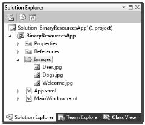
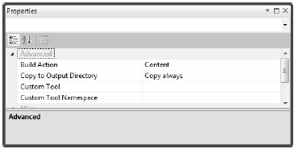
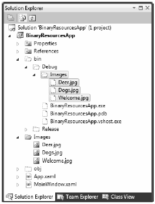
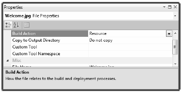
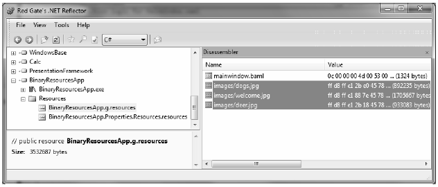
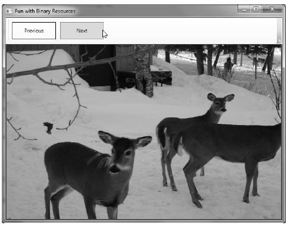

Our first task is to examine the topic of embedding and accessing application resources. WPF supports two flavors of resources. The first is a binary resource, and this category typically includes items most programmers consider a resource in the traditional sense (embedded image files or sound clips, icons used by the application, and so on).
The second flavor, termed object resources or logical resources, represents a named .NET object that can be packaged and reused throughout the application. While any .NET object can be packaged as an object resource, logical resources are particularly helpful when working with graphical data of any sort, given that you can define commonly used graphic primitives (brushes, pens, animations, etc.) and refer to them when required.
Before we get to the topic of object resources, let’s quickly examine how to package up binary resources such as icons or image files (e.g., company logos and images for an animation) into your applications. If you’d like to follow along, create a new WPF application named BinaryResourcesApp using Visual Studio 2010. Update the markup for your initial window to use a DockPanel as the layout root:
<Window x:Class="BinaryResourcesApp.MainWindow" xmlns="http://schemas.microsoft.com/winfx/2006/xaml/presentation" xmlns:x="http://schemas.microsoft.com/winfx/2006/xaml" Title="Fun with Binary Resources" Height="500" Width="649"> <DockPanel LastChildFill="True"> </DockPanel> </Window>
Now, let’s say your application needs to display one of three image files inside part of the window, based on user input. The WPF Image control can be used to not only display a typical image file (*.bmp, *.gif, *.ico, *.jpg, *.png, *.wdp, and *.tiff) but also data in a DrawingImage (as you saw in Chapter 29). You might build a UI for your window that supports a DockPanel containing a simple toolbar with Next and Previous buttons. Below this toolbar you can place an Image control, which currently does not have a value set to the Source property, as we will do this in code:
<Window x:Class="BinaryResourcesApp.MainWindow" xmlns="http://schemas.microsoft.com/winfx/2006/xaml/presentation" xmlns:x="http://schemas.microsoft.com/winfx/2006/xaml" Title="Fun with Binary Resources" Height="500" Width="649"> <DockPanel LastChildFill="True"> <ToolBar Height="60" Name="picturePickerToolbar" DockPanel.Dock="Top"> <Button x:Name="btnPreviousImage" Height="40" Width="100" BorderBrush="Black" Margin="5" Content="Previous" Click="btnPreviousImage_Click"/> <Button x:Name="btnNextImage" Height="40" Width="100" BorderBrush="Black" Margin="5" Content="Next" Click="btnNextImage_Click"/> </ToolBar> <!-- We will fill this Image in code --> <Border BorderThickness="2" BorderBrush="Green"> <Image x:Name="imageHolder" Stretch="Fill" /> </Border> </DockPanel> </Window>
Please note that the Click event has been handled for each Button objects. Assuming you have used the IDE to handle these events, you will have two empty methods in your C# code file. So, how can we code the Click event handlers to cycle through the image data? More importantly, do we want to have the image data located on the user’s hard drive or embedded in our compiled assembly? Let’s examine our options.
Let’s assume you wish to ship your image files as a set of loose files in a subdirectory of the application install path. Using the Solution Explorer window of Visual Studio, you can right-click on your project node and select the Add > New Folder menu option to create such a subdirectory, which I have called Images.
Now, when you right-click on this folder, you can select the Add > Existing Item menu option, to copy the image files into the new subdirectory. In the downloadable source code for this project, you will find three image files named Welcome.jpg, Dogs.jpg and Deer.jpg that you can include in this project, or simply add three image files of your choice. Figure 30-1 shows the current setup.
Figure 30-1 A new subdirectory in our WPF project containing image data
When you want Visual Studio 2010 to copy project content to your output directory, you need to adjust a few settings using the Properties window. To ensure that the content of your \Images folder is copied to the \bin\Debug folder, begin by selecting each image in the Solution Explorer. Now, with these images still selected, use the Properties window to set the Build Action property to Content, and the Copy to Output Directory property to Copy always (see Figure 30-2).
Figure 30-2 Configuring the image data to be copied to our output directory
If you recompile your program, you can now click on the Show all Files button of the Solution Explorer and view the copied Image folder under your \bin\Debug directory (you might need to click the refresh button). See Figure 30-3.
Figure 30-3 The copied data
WPF provides a class named BitmapImage, which is part of the System.Windows.Media.Imaging namespace. This class allows you to load data from an image file whose location is represented by a System.Uri object. If you handle the Loaded event of your window, you might fill a List<T> of BitmapImages like so:
public partial class MainWindow : Window { // A List of BitmapImage files. List<BitmapImage> images = new List<BitmapImage>(); // Current position in the list. private int currImage = 0; private const int MAX_IMAGES = 2; private void Window_Loaded(object sender, RoutedEventArgs e) { try { string path = Environment.CurrentDirectory; // Load these images when the window loads. images.Add(new BitmapImage(new Uri(string.Format(@"{0}\Images\Deer.jpg", path)))); images.Add(new BitmapImage(new Uri(string.Format(@"{0}\Images\Dogs.jpg", path)))); images.Add(new BitmapImage(new Uri(string.Format(@"{0}\Images\Welcome.jpg", path)))); // Show first image in the List<>. imageHolder.Source = images[currImage]; } catch (Exception ex) { MessageBox.Show(ex.Message); } } ... }
Notice that this class also defines an int member variable (currImage) that will allow the Click event handlers to loop through each item in the List<T> and display it in the Image control by setting the Source property. (Here, our Loaded event handler sets the Source property to the first image in the List<T>.) In addition, our MAX_IMAGES constant will let us test for upper and lower limits as we iterate over the list. Here are the Click handlers that do exactly this:
private void btnPreviousImage_Click(object sender, RoutedEventArgs e) { if (--currImage < 0) currImage = MAX_IMAGES; imageHolder.Source = images[currImage]; } private void btnNextImage_Click(object sender, RoutedEventArgs e) { if (++currImage > MAX_IMAGES) currImage = 0; imageHolder.Source = images[currImage]; }
At this point, you can run your program and flip through each picture.
If you’d rather configure your image files to be compiled directly into your .NET assembly as binary resources, select the image files in Solution Explorer (in the \Images folder, not in the \bin\Debug\Images folder). Then change the Build Action property to Resource and the Copy to Output Directory property to Do not copy (Figure 30-4).
Figure 30-4 Configuring the images to be embedded resources
Now, using Visual Studio 2010’s Build menu, select the Clean Solution option to wipe out the current contents of \bin\Debug\Images, then rebuild your project. Refresh the Solution Explorer, and observe the absence of \bin\Debug\Images in your \bin\Debug directory
With the current build options, your graphical data is no longer copied to the output folder and is now embedded within the assembly itself. Assuming you have recompiled your project, you can open the assembly into reflector.exe, and see the embedded image data (Figure 30-5).
Figure 30-5 The embedded image data
With this adjustment, we will now need to modify our code to load these images by extracting them from the compiled assembly:
private void btnPreviousImage_Click(object sender, RoutedEventArgs e) { if (--currImage < 0) currImage = MAX_IMAGES; imageHolder.Source = images[currImage]; } private void btnNextImage_Click(object sender, RoutedEventArgs e) { if (++currImage > MAX_IMAGES) currImage = 0; imageHolder.Source = images[currImage]; }
Notice in this case, we no longer need to determine the installation path and can simply list the resources by name, which takes into account the name of the original subdirectory. Also notice, when we create our Uri objects, we specify a UriKind value of Relative. In any case, at this point our executable is a standalone entity that can be run from any location on the machine, as all compiled data is within the binary. Figure 30-6 shows the completed application.
Figure 30-6 Our simple picture viewer